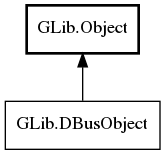

GLib.DBusObject Reference Manual
Packages
gio-2.0
GLib
DBusObject
get_interface
get_interfaces
get_object_path
interface_added
interface_removed
DBusObject
Object Hierarchy:

Description:
public
interface
DBusObject
:
Object
All known implementing classes:
DBusObjectProxy
DBusObjectSkeleton
Namespace:
GLib
Package:
gio-2.0
Content:
Methods:
public
abstract
DBusInterface
get_interface
(
string
interface_name)
public
abstract
List
<
DBusInterface
>
get_interfaces
()
public
abstract
unowned
string
get_object_path
()
Signals:
public
virtual
signal
void
interface_added
(
DBusInterface
interface_)
public
virtual
signal
void
interface_removed
(
DBusInterface
interface_)